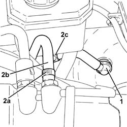
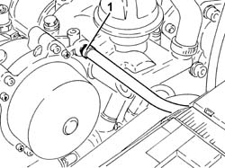
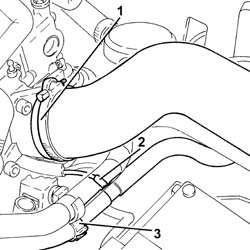
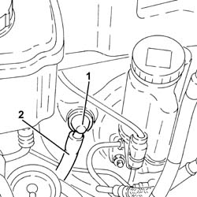
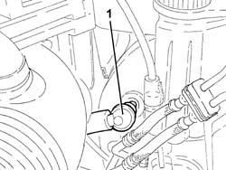
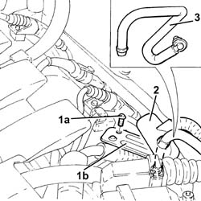

3330D26 VACUM PIPE FOR BRAKE SERVO ASSEMBLY R R
- Path
- Procedures > 33 BRAKING SYSTEM > 3330 HYDRAULIC BRAKING SYSTEM > 3330D BRAKE VACUUM SYSTEM > 3330D26 VACUM PIPE FOR BRAKE SERVO ASSEMBLY R R
- Kind
- repair procedure (removal / refitting; the operation number is the code)
- Applies to
- engines: 1.8 T.SPARK, 3.2 V6, 1.9 JTD 16V; all production periods
- Interactive page
- https://sloeber94.github.io/elrnDB-aGt/en/#/125001352
Applies to: engines: 3.2 V6; all production periods
Applies to: engines: 3.2 V6; all production periods
 Removing
Removing
 Refitting
Refitting1. Disconnect the single-acting valve from the brake servo.
2. Loosen the band (2a), disconnect vacuum pipe (2b) from the air capacity chamber, then remove it complete with the brake servo single-acting valve after releasing from collar (2c).

Applies to: engines: 3.2 V6; all production periods
Refitting
RemovingRefit the vacuum pipe complete with single-acting valve for brake servo and secure with the appropriate band.
Connect the brake servo vacuum pipe to the air capacity chamber and tighten the band.
Connect the single-acting valve to the brake servo.
Applies to: engines: 1.9 JTD 16V; all production periods
Removing
RefittingProceed with removal - 1016A10 SOUNDPROOFING COVER - R&R.
.
1. Loosen the band and disconnect the vacuum piping for the brake servo from the vacuum pump.

Applies to: engines: 1.9 JTD 16V; all production periods
1. Loosen the band and disconnect the air inlet hose from the connector on the throttle casing.
2. Disconnect the vacuum intake pipe for the vacuum reservoir from the T-fitting on the brake servo vacuum pipe.
3. Releasethe brake servo vacuum pipe from the fastening collar.

Applies to: engines: 1.9 JTD 16V; all production periods
1. Disconnect the brake servo vacuum pipe complete with single-acting valve from the brake servo.
2. Remove the vacuum pipe for the brake servo.

Applies to: engines: 1.9 JTD 16V; all production periods
Refitting
RemovingRefit the brake servo vacuum pipe.
Connect the brake servo vacuum pipe complete with single-acting valve to the brake servo.
Secure the brake servo vacuum pipe using the collar.
Connect the vacuum intake pipe for the vacuum reservoir to the T-fitting on the brake servo vacuum pipe.
Connect the air inlet hose to the connector on the throttle casing and tighten the band.
Connect the brake servo vacuum intake pipe to the vacuum pump and tighten the band.
Proceed with refitting - 1016A10 SOUNDPROOFING COVER - R&R.
.
Applies to: engines: 1.8 T.SPARK; all production periods
Removing
Refitting- Disconnect the single-acting valve from the brake servo.

Applies to: engines: 1.8 T.SPARK; all production periods
- Undo the bolts (1a) and remove the bracket (1b) after having released the band from the electrical wiring.
- Undo the vacuum pipe protection.
- Disconnect the vacuum pipe from the air capacity chamber and remove complete with brake servo single-acting valve.

Applies to: engines: 1.8 T.SPARK; all production periods
Refitting
Removing- Refit the vacuum pipe complete with the brake servo single-acting valve.
- Connect the vacuum pipe to the air capacity chamber.
- Place the protection back in its housing.
- Refit the bracket and secure with the bolts, then secure the electrical wiring to the band.
- Connect the single-acting valve to the brake servo.